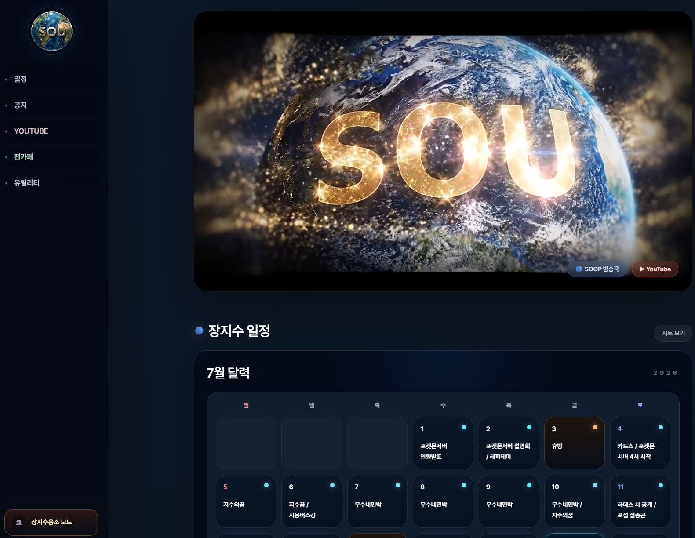
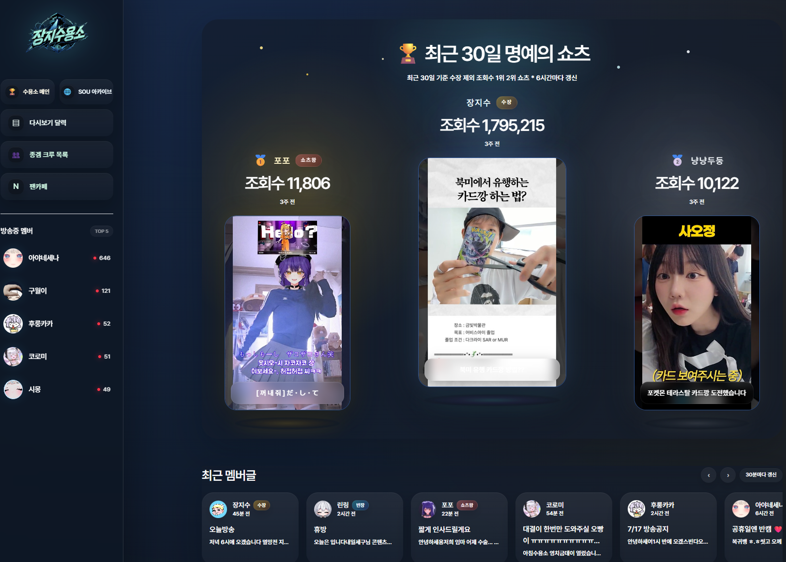
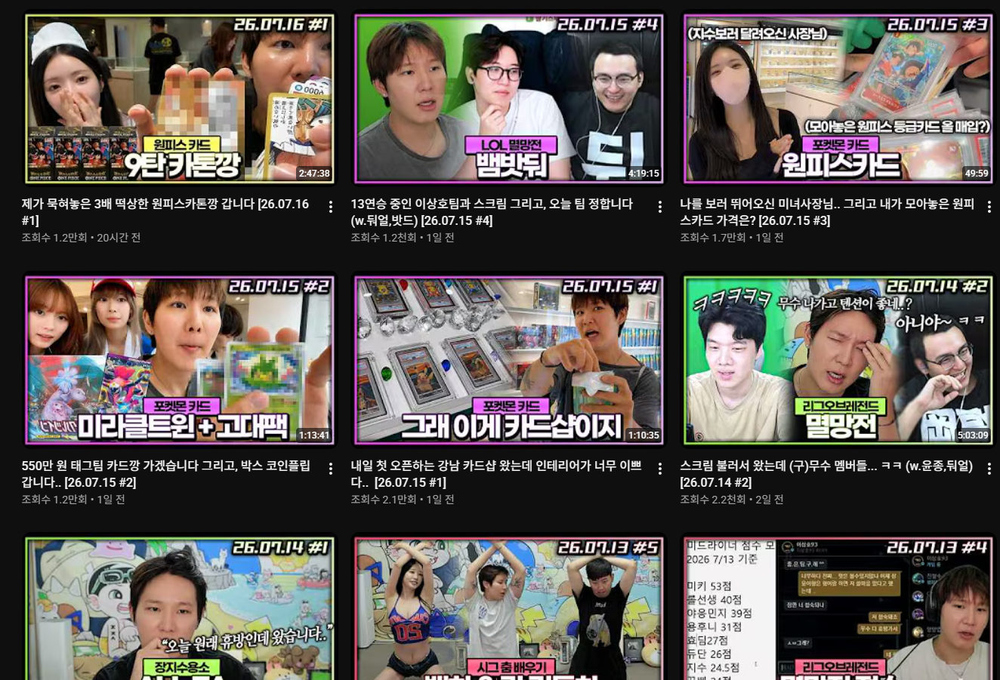

SELECTED IMPACT
말보다 분명한
운영의 결과
한 편의 영상이 아니라 채널이 계속 성장할 수 있는 구조를 만들었습니다
01 · DATA OPERATIONS
320,300+후원 기록 통합 관리
수많은 기록을
정확한 정산으로
대형 라이브 콘텐츠의 후원 데이터를 전수 추적하고 지급 기준과 코딩 로그, 데이터 시트를 연결해 검증 가능한 정산 시스템을 구축했습니다
- 후원 데이터 전수 트래킹
- 지급 자동화와 실행 로그
- 특별 콘텐츠 실시간 모니터링
DONATION DATA320,300 records
02 · WEB PLATFORM
팬덤이 머무는 공간을
직접 설계하고 운영합니다
콘텐츠와 브랜드에 필요한 기능을 정의하고 프론트엔드와 백엔드 개발, Vercel 배포와 실시간 유지보수까지 전 과정을 담당합니다
- 일정·공지·콘텐츠 통합
- 커뮤니티와 아카이브
- 반응형 UI/UX와 운영 도구


03 · CHANNEL GROWTH
₩0.4M → ₩5–7M풀영상 채널 월수익
아카이브를
수익 채널로
실시간 업로드와 저작권 분리, 콘텐츠 선별과 썸네일 기준을 정리해 월 40만 원 수준의 풀영상 채널을 월 500–700만 원 규모로 성장시켰습니다
- 빠른 풀영상 업로드 체계
- 저작권 사전 분리
- 제목·썸네일·콘텐츠 선별

04 · EDITORIAL DIRECTION
편집자를 교육하고
채널의 기준을 만듭니다
건별 편집자를 직접 채용하고 편집점, 템포와 밈 활용을 교육했습니다 결과물 피드백과 품질 관리를 맡고 썸네일은 직접 제작해 채널의 톤앤매너를 구축했습니다
- 편집자 채용과 실무 교육
- 편집 가이드와 결과물 피드백
- 썸네일 직접 제작

COLLABORATION
 감스트GAMST
감스트GAMST 장지수
장지수 김인호TV
김인호TV 김성대
김성대